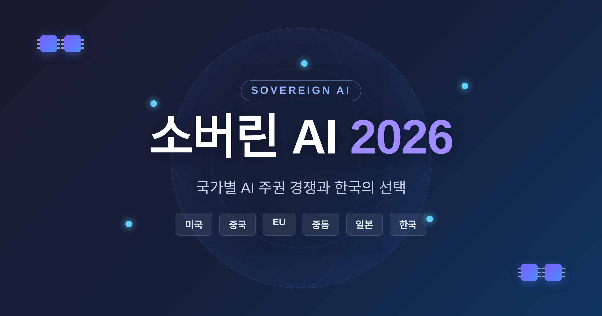
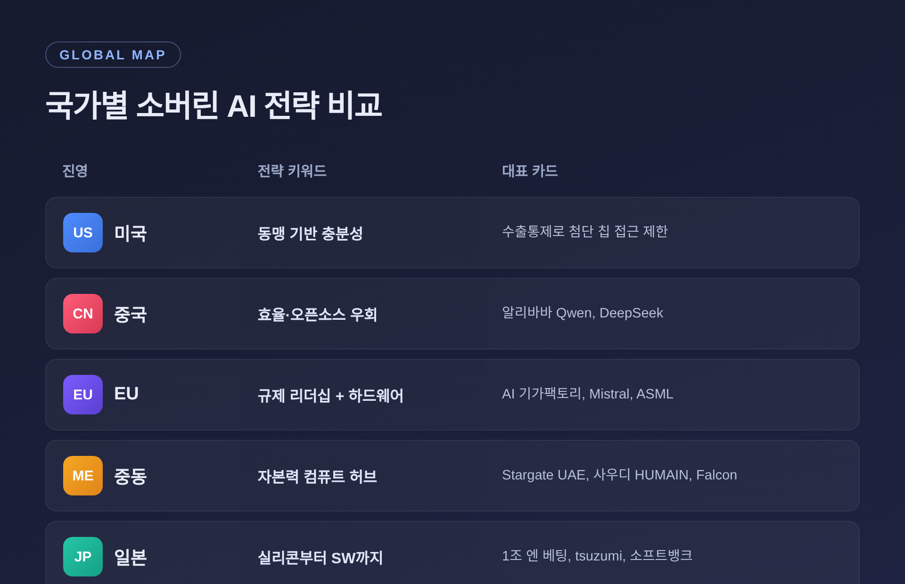
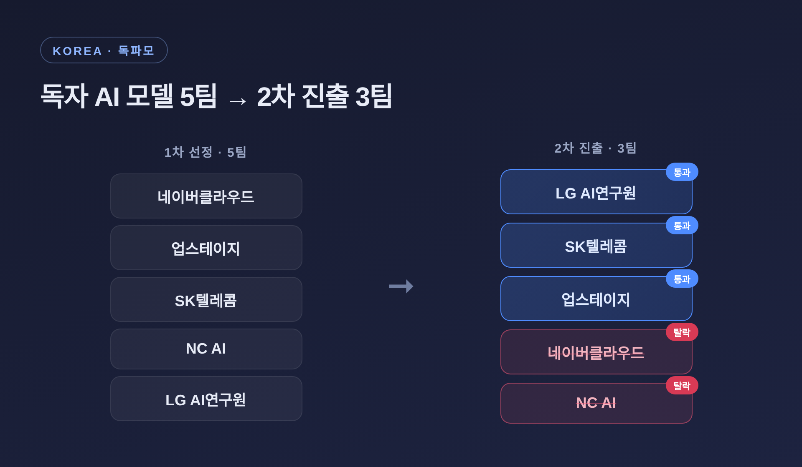
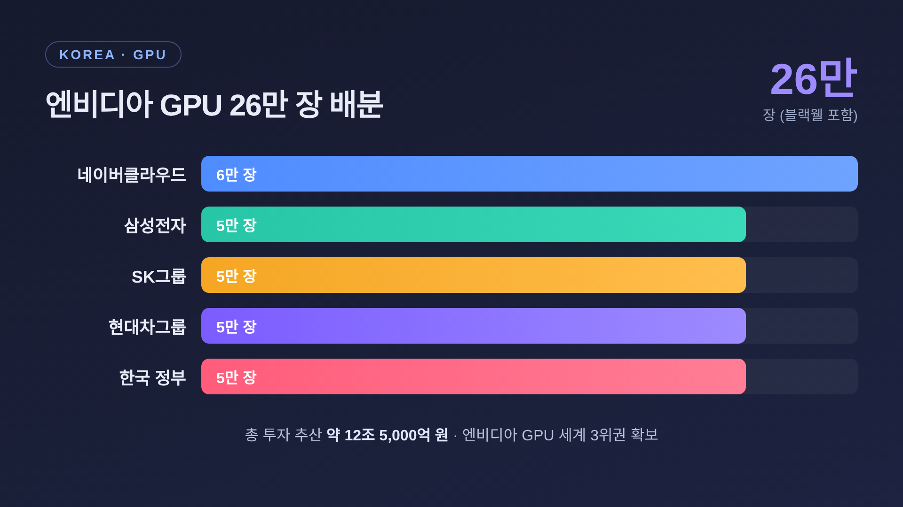

이번 글에서는 2026년 가장 뜨거운 키워드인 소버린 AI를 정리해 보겠습니다.
소버린 AI가 무엇인지, 미국·중국·EU·중동·일본은 어떻게 움직이는지, 그리고 한국은 무엇을 선택했는지를 한자리에 모았습니다.
먼저 세 줄로 요약하겠습니다.

소버린 AI(Sovereign AI), 우리말로는 'AI 주권'입니다. 한 국가가 자국의 데이터·인프라·모델·인력을 직접 통제하고 운영하는 AI 체계를 가리킵니다.
핵심은 종속을 피하는 데 있습니다. 특정 국가나 기업에 기술이 묶이지 않도록, 자국민의 데이터와 알고리즘, 규범 환경에 대한 통제권을 쥐겠다는 뜻입니다.
데이터 주권에서 한 발 더 나아간 개념이기도 합니다. 예전에는 '데이터를 국내에 두는 것'이 화두였습니다. 지금은 모델 학습과 추론 과정 전체, 그리고 그 결과물인 지능까지 소유·통제하려 합니다.
왜 지금일까요. 크게 세 가지 이유가 거론됩니다.
소버린 AI를 대중화한 사람은 엔비디아 CEO 젠슨 황입니다.
2024년 2월 두바이 세계정부정상회의에서 그는 이렇게 말했습니다. "모든 국가는 경제 잠재력을 극대화하고 자국 문화를 보호하기 위해 자체 AI 인프라 생태계를 가져야 한다."
그는 소버린 AI를 "당신의 문화, 사회의 지능, 상식, 역사를 코드화하는 것"이라고 표현했습니다. AI를 전기·도로처럼 국가의 기본 인프라로 규정한 셈입니다.
다만 그가 "이 인프라를 구축하는 것이 그렇게 비싸지도, 어렵지도 않다"고 한 대목에는 비판도 따릅니다. GPU를 파는 쪽의 입장이라는 시선입니다. 이 한계는 글 뒤쪽에서 다시 짚겠습니다.
2026년 현재 구도는 미국·중국 양강입니다. 그 사이에서 EU, 중동, 일본, 인도, 동남아가 각자의 길을 찾고 있습니다.
먼저 큰 그림을 표로 정리하겠습니다.
| 진영 | 전략 키워드 | 대표 카드 |
|---|---|---|
| 미국 | 동맹 기반 충분성 | 수출통제로 첨단 칩 접근 제한 |
| 중국 | 효율·오픈소스 우회 | 알리바바 Qwen, DeepSeek |
| EU | 규제 리더십 + 하드웨어 지렛대 | AI 기가팩토리, Mistral, ASML |
| 중동 | 자본력으로 컴퓨트 허브 | Stargate UAE, 사우디 HUMAIN, Falcon |
| 일본 | 실리콘부터 소프트웨어까지 | 1조 엔 베팅, tsuzumi, 소프트뱅크 |

미국은 통합된 서방 공급망을 확보하고, 수출통제로 경쟁국의 첨단 칩 접근을 막는 전략입니다. 중국은 그 제약 속에서 알고리즘 효율화와 오픈소스 모델로 우회해, 비서방 시장에서 영향력을 넓히고 있습니다.
EU는 규제와 하드웨어, 두 지렛대를 함께 씁니다. GDPR·EU AI Act의 규제 리더십에, 노광장비를 사실상 독점한 ASML이라는 하드웨어 카드를 더합니다. 약 200억 유로를 동원해 첨단 프로세서 10만 개 이상을 갖춘 AI 기가팩토리 최대 5개를 추진 중입니다. 프랑스의 Mistral AI는 인프라·모델·애플리케이션을 아우르는 수직통합을 내세웠습니다.
중동은 자본으로 승부합니다. UAE의 Stargate UAE는 1GW 규모 컴퓨트 클러스터로, 첫 200MW가 2026년 가동 예정입니다. 사우디는 2025년 5월 국부펀드 자회사 HUMAIN을 국가 AI 챔피언으로 세웠고, 같은 해 11월 엔비디아와 20만 GPU 파트너십을 발표했습니다.
일본은 '실리콘부터 소프트웨어까지'를 내걸고 약 1조 엔(63억 4천만 달러) 규모의 소버린 AI를 승인했습니다. NTT의 완전 자체 개발 LLM 'tsuzumi'는 2026년 3월 약 18만 명 공무원 대상 국산 모델로 선정됐습니다. 전략은 '범용 작업은 글로벌 모델, 기밀·규제·일본어 특화 작업은 국산 모델'이라는 하이브리드 공존으로 수렴하고 있습니다.
한국은 2025년 8월 '독자 AI 파운데이션 모델', 줄여서 독파모 사업의 5개 정예팀을 선정했습니다. 네이버클라우드, 업스테이지, SK텔레콤, NC AI, LG AI연구원입니다. 목표는 세계 10위권에 드는 한국 AI 모델을 만드는 것입니다.
그리고 2026년 1월, 1차 평가 결과가 나왔습니다. LG AI연구원·SK텔레콤·업스테이지 세 팀이 2차에 진출했습니다. 네이버클라우드와 NC AI는 2차 진출에 들지 못했습니다.
흥미로운 대목이 있습니다. 네이버클라우드는 점수 기준으로는 상위 4팀에 들었으나, '독자성' 기준을 충족하지 못해 제외된 것으로 보도됐습니다.
팀별 모델 규모는 이렇게 알려졌습니다.
| 팀 | 모델 규모(파라미터) | 방향 |
|---|---|---|
| SK텔레콤 | 5,190억(519B) | 최대 규모 |
| LG AI연구원 | 2,360억(236B) | 산업 응용 모델 |
| 업스테이지 | 1,020억(102B) | 효율 중심 |

기업마다 노선도 다릅니다. 삼성전자·KT는 빅테크와의 협력을 병행하는 쪽입니다. LG AI연구원은 '엑사원' 계열로 독자 생태계를 구축하는 자립 노선입니다. 이른바 '자립이냐 협력이냐'를 두고 기업마다 해석이 갈리는 셈입니다.
정부는 2026년 상반기 1개 팀을 추가로 선정해 4파전 구조를 만들 계획입니다. 또한 소버린 AI 모델을 2026년 8월 오픈소스로 푸는 '모두의 AI' 구상도 추진 중입니다.
모델만으로는 부족합니다. 모델을 돌릴 연산 자원, 곧 GPU가 있어야 합니다.
2025년 경주 APEC을 계기로 한국은 큰 약속을 받아냈습니다. 엔비디아는 한국 정부·삼성·SK·현대차·네이버클라우드가 블랙웰 GPU를 포함해 총 26만 장을 활용하는 AI 인프라에 투자한다고 발표했습니다.
배분 계획은 다음과 같습니다.
고성능 GPU 1장을 약 5,000만 원으로 잡으면 총 투자액은 약 12조 5,000억 원으로 추산됩니다. 이 공급 약속으로 한국은 엔비디아 GPU를 세계 3위권으로 많이 확보한 국가로 평가받았습니다.

정부 몫 5만 장은 소버린 AI 모델과 국가AI컴퓨팅센터 구축에 쓰입니다. 이미 1차 추경에서 1.46조 원을 들여 약 1만 3,000장 규모를 확보해 2026년 2월부터 순차 배분 중입니다. 2026년 본예산에는 약 2조 원을 편성해 1만 5,000장 이상을 추가로 확보할 계획입니다.
다만 한 가지 짚어둘 점이 있습니다. '세계 3위'라는 표현은 매체마다 기준이 조금씩 다릅니다. 누적 보유분인지, 약속분을 포함한 수치인지에 따라 달라질 수 있어, 'AI 인프라 3대 강국' 수준으로 받아들이는 편이 안전합니다.
자금도 함께 움직였습니다.
2026년 4월 30일, 금융위원회는 국민성장펀드 심의위원회를 열었습니다. '소버린 AI 확보를 위한 차세대 AI 모델 개발' 사업을 위해 업스테이지에 총 5,600억 원 직접투자를 승인했고, 5월 3일 발표했습니다.
자금 구성은 이렇습니다.
업스테이지는 AI 모델 부문 첫 직접투자 기업이자, 국민성장펀드 전체로는 두 번째 직접투자 사례입니다. 소프트웨어 기업으로는 첫 사례입니다.
물론 빛만 있는 것은 아닙니다. '만년 적자' 기업에 5,600억을 베팅한 데 대해 특혜·공정성 논란이 제기됐습니다. 업스테이지는 이 자금으로 네이버를 넘어서겠다는 포부를 밝혔지만, 기대와 회의가 함께 따라붙고 있습니다.
여기까지 보면 흐름은 분명합니다. 그러나 정작 가장 어려운 질문은 따로 있습니다. "진짜 자급이 가능한가"입니다.
세계경제포럼(WEF)은 'AI 주권의 신화'라는 논평에서, 완전한 자급은 환상에 가깝다고 지적합니다. 원자재에서 칩 제조, 인재까지 이어지는 공급망이 너무 복잡해, 100% 완전 주권은 현실적으로 불가능하다는 것이 중론입니다. 역설적이게도, 중견국의 주권 추구가 오히려 강대국 빅테크에 대한 종속을 심화시킬 수 있다는 분석도 있습니다.
국내에서도 시선이 둘로 갈립니다.
또 하나의 논점은 '프롬 스크래치' 논란입니다. 정부 사업은 '독자성'을 강조했지만, 그 기준이 명확히 정의되지 않았습니다. '오픈소스 모델을 기반으로 고도화한 것도 소버린 AI인가, 처음부터 자체 학습해야 진짜 독자 모델인가.' 이 해석을 두고 업계·언론·기업의 의견이 엇갈리며 혼란이 커졌습니다.
현실적인 결론은 절충에 가깝습니다. 자립 가능성과 해외 협력 전략, 특히 GPU 확보를 함께 고려해야 한다는 쪽입니다. 앞서 본 일본의 하이브리드 공존 — 범용은 글로벌 모델, 민감·특화는 국산 모델 — 이 한국에도 시사점을 줍니다.
정리하면 이렇습니다.
소버린 AI는 더 이상 구호가 아니라, 각국이 돈과 GPU를 쏟아붓는 현실의 경쟁이 됐습니다. 한국도 모델 3팀, GPU 26만 장, 업스테이지 5,600억이라는 구체적인 카드를 손에 쥐었습니다. 다만 '완전한 자급'은 아무도 약속하지 못하는 영역입니다.
결국 관건은 이분법이 아니라 설계입니다.
"무엇을 자국이 통제하고, 무엇을 협력할 것인가."
주권이냐 협력이냐를 묻기보다, 그 경계를 어떻게 그을지 묻는 편이 더 정확하다고 생각합니다. 2026년의 한국이 그 선을 어디에 긋는지, 함께 지켜보면 좋겠습니다.